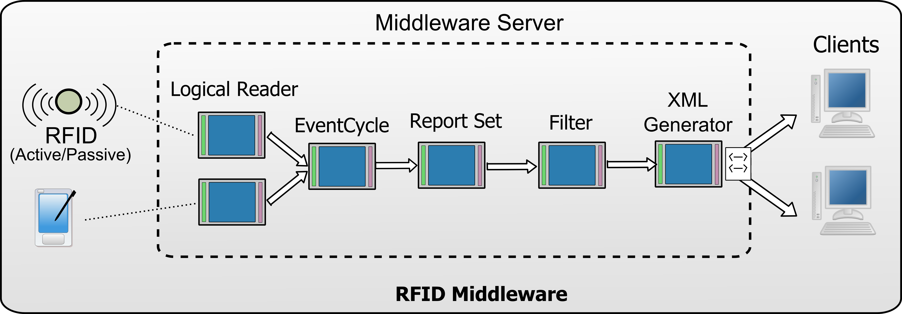
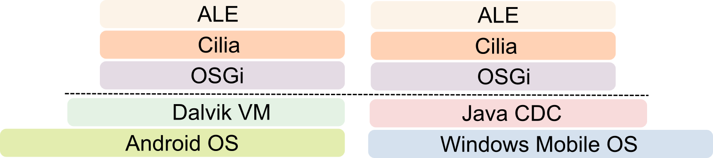

Aspire :: Filtering And Collection Server (Prototype) in Cilia
1 Introduction
Cilia is an specialized component model for the building of mediation applications. In Cilia, a mediation application is seen as a dataflow system, where different tasks are interconnected to achieve the desired integration between data sources and targeted applications. In this manner, dataflow systems are achieved following a pipes-and-filter architectural style. Filters are independent from each other, each filter representing one of the interconnected tasks. In Cilia, these tasks are performed by mediators, and the pipes by bindings (using different protocols). Each connection describes the direction in which the data must follow, i.e. the source mediator and the target mediator. Connections are important in this architectural style as they allow for a loosely coupled relation between mediators.
Following the Cilia approach, the functionality of the F&C server has been decomposed into small tasks that are interconnected in a dataflow fashion. The result of each component task is the input to the following one.
2 Architecture
Cilia framework is built on top of OSGi platform (a modular system for Java applications). Decoupling of Cilia mediators allows applications to be executed in different platforms reusing most of application components. In next figure are shown how the ALE server has been designed in the Cilia Framework.

Following the Cilia approach, the F&C module has been built using a mediation chain as follows. The first mediators in the chain are the logical readers. Read tags by physical devices are gathered by these components. The scheduler of this component triggers the data processing (i.e. tags gathering) periodically (i.e., read period). The processing of this component eliminates duplicated tags. Next, event cycle mediators are in charge of aggregating tags read from logical readers. The scheduler of this component is also configured to trigger the processing periodically (i.e., event period). The processing will eliminate duplicated read tags from dierent logical readers. Then, report set mediators found in the chain, are in charge of calculating the set of tags to be included in the report (i.e. current tags, additions, or deletions). Later, filter mediators apply filters on the set of data produced by the previous mediators. Finally, generator mediator produces the requested report (gener-
ally as an XML document), called ECReports in the EPC Global specification, and sends it to the interested clients (e.g. Aspire'
BEG and
EPCIS modules or external sensor repositories such as
Pachube).
2.1 Embedded Architecture
In this prototype, an ALE server version has been tested for two mobile platforms Android and Windows Phone. Layered architecture of these distributions is presented in the next figure.

3 User Guide
3.1 Download and Run
You can download (svn repository) and build the code source of projects implementing the ALE server in Cilia.
- aspire-cilia-compendium : The core components of the ALE server
- reader-adaptor-api : The API and common classes for readers
- cilia-simulator-reader : An simulator reader
- cilia-acr122u-reader : An reader driver for the ACR122U readers.
4 References
- Cilia website http://wikiadele.imag.fr/index.php/Cilia
- Gabriel PEDRAZA, Issac GARCIA and Bassem DEBBABI, An RFID architecture based on an event-oriented component model. International Conference on Distributed Event-based Systems (DEBS 2010), Cambridge – England, July 12 - 15 2010, http://debs10.doc.ic.ac.uk/
- Issac Garcia, Gabriel Pedraza, Bassem Debbabi, Philippe Lalanda, Catherine Hamon,Towards a service mediation framework for dynamic applications, IEEE APSCC 2010 , December 6 - 10, 2010, Hangzhou, China, http://apscc2010.hdu.edu.cn/APSCC_home.html
 PDF
PDF History
History


{kind=link}
{kind=link}